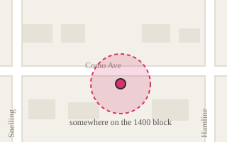

1400 block of Como Ave · 0.3 mi · up since 2021 1
34 books 6 out right now updated 2 days ago
Mostly novels and kids picture books. Take what you want, leave what you want. There is a bench.
34 books, newest first 2
...29 more. Show all
Kept up by
Dana, curator since 2021
No contact form on purpose. Report a problem with the box here. 4
